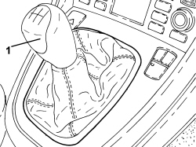

2125C24 GEAR LEVER KNOB - R + R
- Path
- Procedures > 21 GEARBOX UNIT > 2125 MANUAL GEARBOX EXTERNAL CONTROLS - R.R. > 2125C MANUAL GEARBOX EXTERNAL CONTROL (CABLES) > 2125C24 GEAR LEVER KNOB - R + R
- Kind
- repair procedure (removal / refitting; the operation number is the code)
- Applies to
- engines: 1.8, 2.2, 1.9 JTD 8v, 1.9 JTD 16v; all production periods
- Interactive page
- https://sloeber94.github.io/elrnDB-fCrm/en/#/194000175
Applies to: engines: 1.8, 2.2, 1.9 JTD 8v, 1.9 JTD 16v; all production periods
 Removing
Removing
 Refitting
Refitting1. Using suitable protection, bind the grip and undo it and remove it using pliers.

Applies to: engines: 1.8, 2.2, 1.9 JTD 8v, 1.9 JTD 16v; all production periods
Refitting
Removing- Manually tighten the grip on the gear lever.
- Using suitable protection, bind the grip and complete the fitting using pliers.